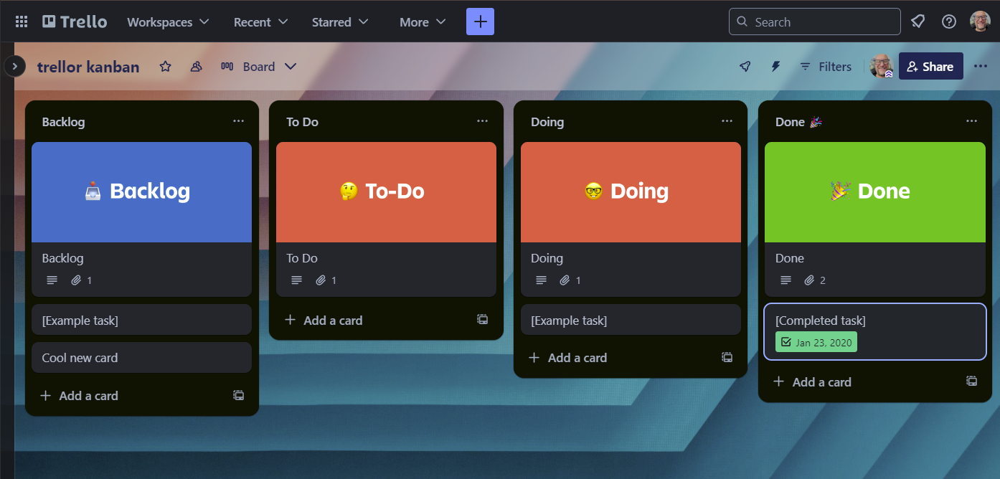

Trello = Project Management Tool
HTTP request = URL + headers + method + body
Body = data sent in request
req_body_json() = most commonreq_body_multipart() = mixed
curl::form_file() to indicate file pathsreq_body_file()req_body_form() = special format for HTML formsreq_body_raw()httr2::req_body_json(req, data, {jsonlite::toJSON args})
Formally:
GET (fetch existing thing)POST (send new thing)PATCH (change existing thing)PUT (replace existing thing)DELETE (delete existing thing)CONNECT, OPTIONS, HEAD, TRACE (very rare)GET = default without bodyPOST = default with bodyreq_method() to specify (rarely needed)6dkXRHRK = board ID from URLnew_card <- list(
idBoard = "6dkXRHRK",
idList = board_lists[[1]]$id,
name = "*** Newly Created Card ***",
desc = "This card was created as a book club demo."
)
new_card_response <- trello_req |>
httr2::req_url_path_append("cards") |>
httr2::req_body_json(data = new_card) |>
httr2::req_perform() |>
httr2::resp_body_json()cards <- tibble::tibble(
name = glue::glue("*** Sample card for {state.abb} ***"),
desc = glue::glue("A card to do something for {state.name}.")
)
cards#> # A tibble: 50 × 2
#> name desc
#> <glue> <glue>
#> 1 *** Sample card for AL *** A card to do something for Alabama.
#> 2 *** Sample card for AK *** A card to do something for Alaska.
#> 3 *** Sample card for AZ *** A card to do something for Arizona.
#> 4 *** Sample card for AR *** A card to do something for Arkansas.
#> 5 *** Sample card for CA *** A card to do something for California.
#> 6 *** Sample card for CO *** A card to do something for Colorado.
#> 7 *** Sample card for CT *** A card to do something for Connecticut.
#> 8 *** Sample card for DE *** A card to do something for Delaware.
#> 9 *** Sample card for FL *** A card to do something for Florida.
#> 10 *** Sample card for GA *** A card to do something for Georgia.
#> # ℹ 40 more rowsreq_template(), curl_translate()req_throttle(), req_timeout(), req_progress()req_perform_stream()req_options()DSLC.io/wapir | Jon Harmon | wapir.io